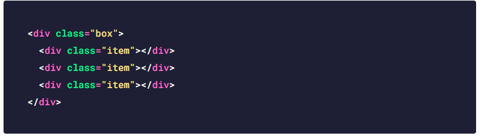
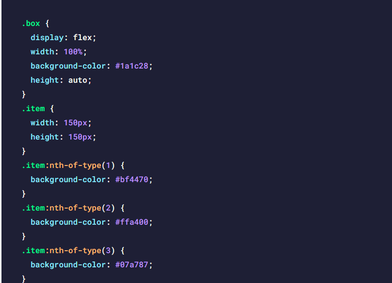
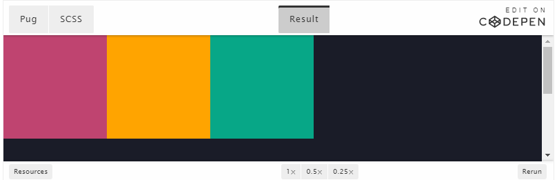
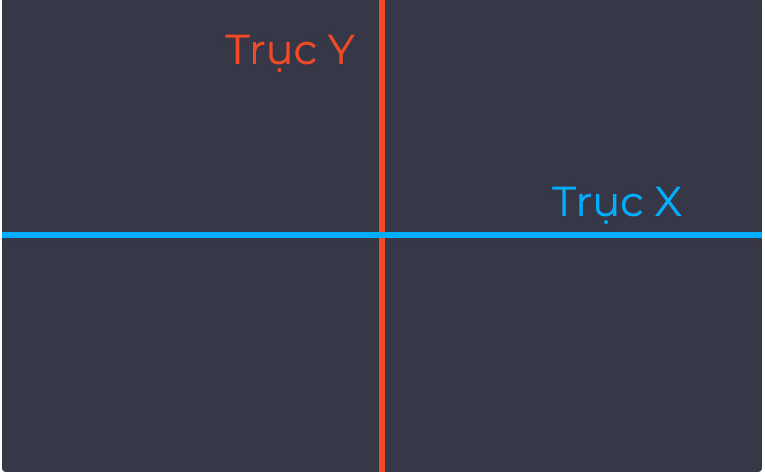

Học CSS Flexbox toàn tập phần 1
POSTED ON13/10/2020  evondev
evondev
POSTED ON13/10/2020 evondev
Trước đây khi chúng ta thiết kế web đặc biệt là dàn trang layout, menu, chia các cột cho các thành phần trong web thì hầu hết đều sử dụng các thuộc tính như float kèm theo đó là clear float để chia cột . Khó khăn là khi responsive và hiển thị trên nhiều thiết bị phải chỉnh sửa code khá nhiều nên rất tốn thời gian.
Hoặc nhanh hơn thì các bạn sử dụng CSS Framework như bootstrap chẳng hạn, nhưng như thế thì website của bạn lại có nhiều đoạn code ‘dư thừa’ bạn không sử dụng gây ảnh hưởng đến tốc độ website…
Thế là Flexbox được sinh ra để cải thiện tình hình này, giúp cho việc dàn trang, canh các thành phần với nhau linh hoạt, dễ dàng và tiết kiệm thời gian hơn rất nhiều.
Hôm nay mình viết bài này để chúng ta cùng tìm hiểu về sức mạnh của CSS Flexbox để xem cách sử dụng nó như thế nào, nó có những thuộc tính hay gì mà nhiều người lại sử dụng nó thay cho float hay inline thế nhỉ ?
Để sử dụng flex trong css thì đơn giản là chúng ta chỉ cần sử dụng thuộc tính display: flex. Mình có layout như thế này để các bạn dễ hình dung nha.

Và mình css như sau:

Và đây là kết quả

Roài giờ đây mình sẽ đi vào chi tiết từng thuộc tính khác của CSS Flexbox kèm theo hình minh họa để cho các bạn dễ hình dung nha. Mình sẽ giải thích từng thuộc tính một cho các bạn kèm hình minh họa cho các bạn dễ hiểu. Nếu không hiểu thì bình luận ở dưới mình sẽ trả lời thắc mắc của các bạn. À 1 lưu ý nhỏ:
Như tên gọi của nó là hướng(trục), thì trong flexbox có 2 trục chính đó là trục X và trục Y giống như biểu đồ toán học đó các bạn. Lưu ý là flexbox chỉ hiển thị theo 1 trong 2 hướng thôi nha, chứ không hiển thị 1 lần 2 hướng như CSS Grid được(Sau này mình sẽ viết bài này sau).

Mặc định thì những items trong flexbox được sắp xếp theo trục X và từ trái qua phải. Đó là lý do vì sao khi mình dùng display: flex ở ví dụ ở trên đầu thì các items được sắp xếp thành hàng ngang và hiển thị từ trái qua phải.
Trong flex-direction có 4 giá trị bao gồm: row, row-reverse, column và column reverse.Các bạn nên mở Codepen mình chèn ở trên lên rồi chèn từng thuộc tính vào thử xem có giống hình mình minh họa không nhé.
flex-direction: row là giá trị mặc định trong flex-direction các items sẽ được sắp xếp theo chiều ngang(trục X) và hiển thị từ trái sang phải.
flex-direction: row-reverse cũng giống như thuộc tính flex-direction: row nhưng những items sẽ được hiển thị từ phải qua trái
flex-direction: column các items được sắp xếp chiều dọc(trục Y) và hiển thị từ trên xuống dưới
flex-direction: column-reverse cũng giống với thuộc tính flex-direction: column là các items được sắp xếp chiều dọc(trục Y) nhưng khác ở chỗ là các items hiển thị từ dưới lên trên
Cho phép các items tự động xuống hàng hoặc vẫn luôn nằm trên cùng một hàng khi kích thước container thay đổi. Hơi khó hiểu nhỉ, xem demo dưới đây nha.
Flex-wrap có 3 giá trị đó là wrap, nowrap và wrap-reverse. Mặc định là nowrap nên các bạn không cần phải set. Khi chúng ta resize trình duyệt lại nếu các bạn sử dụng thuộc tính flex-wrap: nowrap thì các items sẽ tự động co lại cho chớ không có rớt xuống hàng, điều này dễ làm cho content bên trong(nếu có) bị ép lại có thể gây xấu giao diện.
flex-wrap: wrap ngược lại so với flex-wrap: nowrap khi kích thước container thay đổi và tổng chiều rộng các items cộng lại lớn hơn chiều rộng của container bọc ngoài thì nó sẽ rớt xuống. Ví dụ như ở demo Codepen. Có 3 items mỗi item 150px, độ rộng(width) của container là 100% là khung hiển thị ở codepen. Khi chúng ta resize trình duyệt thì khung container nó cũng nhỏ theo, khi chạm qua item số 3 màu xanh lá 1 chút thì item sẽ tự động rớt xuống.
Cuối cùng là flex-wrap: wrap-reverse cũng tương tự như flex-wrap: wrap nhưng nó ngược lại thay vì item rớt xuống thì nó rớt lên. Resize trình duyệt phát hiểu ngay.
Lâu lâu các bạn có thấy một số người dùng thuộc tính flex-flow: row wrap. Thuộc tính này viết để gộp 2 thuộc tính flex-direction và flex-wrap lại nhé các bạn. Nó như thế này flex-flow: flex-direction flex-wrap. Ứng với flex-direction và flex-wrap các bạn thay giá trị tương ứng vào nhé.
Do bài này dài và mình cũng muốn giải thích chi tiết cho các bạn. Nên mình chia bài về flexbox này thành 5 phần(4 phần lý thuyết và 1 phần thực hành) cho các bạn dễ theo dõi và đỡ ngán khi đọc do dài quá.
Bài tiếp theo mình sẽ nói đến 4 thuộc tính khác đó là justify-content, align-items, align-self và order các bạn nhớ đón đọc nha. Nếu có ý kiến hay góp ý hoặc không hiểu thì bình luận bên dưới mình sẽ trả lời. Chúc các bạn một ngày tốt lành.